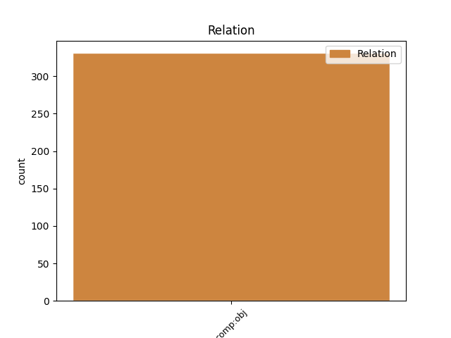

Distribution of features within this leaf

Agreement Rules sorted by frequency.
- When the dependent token is the direct object complements(comp:obj) of the head token, and the dependent token is PRON.
1 A _ _ _ _ 0 _ _ _
2 kako _ _ _ _ 0 _ _ _
3 je _ _ _ _ 0 _ _ _
4 on _ _ _ _ 0 _ _ _
5 , _ _ _ _ 0 _ _ _
6 štoviše _ _ _ _ 0 _ _ _
7 , _ _ _ _ 0 _ _ _
8 i _ _ _ _ 0 _ _ _
9 gospodar _ _ _ _ 0 _ _ _
10 kontemplacije _ _ _ _ 0 _ _ _
11 u _ _ _ _ 0 _ _ _
12 tajnosti _ _ _ _ 0 _ _ _
13 , _ _ _ _ 0 _ _ _
14 i _ _ _ _ 0 _ _ _
15 strani stran ADJ Agpmpny Case=Nom|Definite=Def|Degree=Pos|Gender=Masc|Number=Plur 0 _ _ _
16 su _ _ _ _ 0 _ _ _
17 mu on PRON Pp3msd Case=Dat|Gender=Masc|Number=Sing|Person=3|PronType=Prs 15 comp:obj _ _
18 svi _ _ _ _ 0 _ _ _
19 javni _ _ _ _ 0 _ _ _
20 poslovi _ _ _ _ 0 _ _ _
21 , _ _ _ _ 0 _ _ _
22 te _ _ _ _ 0 _ _ _
23 je _ _ _ _ 0 _ _ _
24 najviši _ _ _ _ 0 _ _ _
25 među _ _ _ _ 0 _ _ _
26 planetima _ _ _ _ 0 _ _ _
27 , _ _ _ _ 0 _ _ _
28 tako _ _ _ _ 0 _ _ _
29 on _ _ _ _ 0 _ _ _
30 stalno _ _ _ _ 0 _ _ _
31 poziva _ _ _ _ 0 _ _ _
32 dušu _ _ _ _ 0 _ _ _
33 od _ _ _ _ 0 _ _ _
34 izvanjskih _ _ _ _ 0 _ _ _
35 stvari _ _ _ _ 0 _ _ _
36 prema _ _ _ _ 0 _ _ _
37 najunutarnjijima _ _ _ _ 0 _ _ _
38 , _ _ _ _ 0 _ _ _
39 osposobljavajući _ _ _ _ 0 _ _ _
40 je _ _ _ _ 0 _ _ _
41 da _ _ _ _ 0 _ _ _
42 se _ _ _ _ 0 _ _ _
43 uzdigne _ _ _ _ 0 _ _ _
44 od _ _ _ _ 0 _ _ _
45 nižih _ _ _ _ 0 _ _ _
46 stvari _ _ _ _ 0 _ _ _
47 prema _ _ _ _ 0 _ _ _
48 najvišima _ _ _ _ 0 _ _ _
49 , _ _ _ _ 0 _ _ _
50 i _ _ _ _ 0 _ _ _
51 šalje _ _ _ _ 0 _ _ _
52 joj _ _ _ _ 0 _ _ _
53 spoznaju _ _ _ _ 0 _ _ _
54 i _ _ _ _ 0 _ _ _
55 percepciju _ _ _ _ 0 _ _ _
56 budućnosti _ _ _ _ 0 _ _ _
57 . _ _ _ _ 0 _ _ _
1 Druga _ _ _ _ 0 _ _ _
2 dva _ _ _ _ 0 _ _ _
3 nastavka _ _ _ _ 0 _ _ _
4 feljtona _ _ _ _ 0 _ _ _
5 - _ _ _ _ 0 _ _ _
6 " _ _ _ _ 0 _ _ _
7 Nespremna _ _ _ _ 0 _ _ _
8 za _ _ _ _ 0 _ _ _
9 životnu _ _ _ _ 0 _ _ _
10 ulogu _ _ _ _ 0 _ _ _
11 " _ _ _ _ 0 _ _ _
12 i _ _ _ _ 0 _ _ _
13 " _ _ _ _ 0 _ _ _
14 Priča _ _ _ _ 0 _ _ _
15 o _ _ _ _ 0 _ _ _
16 dva _ _ _ _ 0 _ _ _
17 grada _ _ _ _ 0 _ _ _
18 " _ _ _ _ 0 _ _ _
19 , _ _ _ _ 0 _ _ _
20 spekuliraju _ _ _ _ 0 _ _ _
21 izdaleka _ _ _ _ 0 _ _ _
22 o _ _ _ _ 0 _ _ _
23 nekim _ _ _ _ 0 _ _ _
24 njenim _ _ _ _ 0 _ _ _
25 intimnim _ _ _ _ 0 _ _ _
26 vezama _ _ _ _ 0 _ _ _
27 , _ _ _ _ 0 _ _ _
28 pa _ _ _ _ 0 _ _ _
29 Ekspertni _ _ _ _ 0 _ _ _
30 tim _ _ _ _ 0 _ _ _
31 postavlja _ _ _ _ 0 _ _ _
32 pitanje _ _ _ _ 0 _ _ _
33 " _ _ _ _ 0 _ _ _
34 zašto _ _ _ _ 0 _ _ _
35 su _ _ _ _ 0 _ _ _
36 samoubilačka _ _ _ _ 0 _ _ _
37 raspoloženja _ _ _ _ 0 _ _ _
38 dolazila _ _ _ _ 0 _ _ _
39 neposredno _ _ _ _ 0 _ _ _
40 nakon _ _ _ _ 0 _ _ _
41 najvećih _ _ _ _ 0 _ _ _
42 priznanja _ _ _ _ 0 _ _ _
43 ili _ _ _ _ 0 _ _ _
44 ostvarenja _ _ _ _ 0 _ _ _
45 ljubavnih _ _ _ _ 0 _ _ _
46 veza _ _ _ _ 0 _ _ _
47 kojima koji DET Pi-fpd Case=Dat|Gender=Fem|Number=Plur|PronType=Int,Rel 50 comp:obj _ _
48 je _ _ _ _ 0 _ _ _
49 toliko _ _ _ _ 0 _ _ _
50 težila težiti VERB Vmp-sf Gender=Fem|Number=Sing|Tense=Past|VerbForm=Part|Voice=Act 0 _ _ _
51 ? _ _ _ _ 0 _ _ _
52 " _ _ _ _ 0 _ _ _
1 Nedavno _ _ _ _ 0 _ _ _
2 smo _ _ _ _ 0 _ _ _
3 sudjelovali _ _ _ _ 0 _ _ _
4 i _ _ _ _ 0 _ _ _
5 na _ _ _ _ 0 _ _ _
6 Street _ _ _ _ 0 _ _ _
7 race _ _ _ _ 0 _ _ _
8 showu _ _ _ _ 0 _ _ _
9 u _ _ _ _ 0 _ _ _
10 Osijeku _ _ _ _ 0 _ _ _
11 na _ _ _ _ 0 _ _ _
12 kojem _ _ _ _ 0 _ _ _
13 smo _ _ _ _ 0 _ _ _
14 se _ _ _ _ 0 _ _ _
15 natjecali _ _ _ _ 0 _ _ _
16 sa _ _ _ _ 0 _ _ _
17 130 _ _ _ _ 0 _ _ _
18 trkaćih _ _ _ _ 0 _ _ _
19 automobila _ _ _ _ 0 _ _ _
20 i _ _ _ _ 0 _ _ _
21 zadivili zadiviti VERB Vmp-pm Gender=Masc|Number=Plur|Tense=Past|VerbForm=Part|Voice=Act 0 _ _ _
22 sve _ _ _ _ 0 _ _ _
23 prisutne prisutan ADJ Agpmpay Case=Acc|Definite=Def|Degree=Pos|Gender=Masc|Number=Plur 21 comp:obj _ _
24 nevjerojatnom _ _ _ _ 0 _ _ _
25 snagom _ _ _ _ 0 _ _ _
26 uz _ _ _ _ 0 _ _ _
27 potpunu _ _ _ _ 0 _ _ _
28 tišinu _ _ _ _ 0 _ _ _
29 . _ _ _ _ 0 _ _ _
1 Pa _ _ _ _ 0 _ _ _
2 sam _ _ _ _ 0 _ _ _
3 ga _ _ _ _ 0 _ _ _
4 pozvala _ _ _ _ 0 _ _ _
5 na _ _ _ _ 0 _ _ _
6 našu _ _ _ _ 0 _ _ _
7 Konferenciju _ _ _ _ 0 _ _ _
8 i _ _ _ _ 0 _ _ _
9 on on PRON Pp3msn Case=Nom|Gender=Masc|Number=Sing|Person=3|PronType=Prs 0 _ _ _
10 je _ _ _ _ 0 _ _ _
11 poziv _ _ _ _ 0 _ _ _
12 prihvatio prihvatiti VERB Vmp-sm Gender=Masc|Number=Sing|Tense=Past|VerbForm=Part|Voice=Act 9 comp:obj _ SpaceAfter=No
13 . _ _ _ _ 0 _ _ _
1 Uspješnim _ _ _ _ 0 _ _ _
2 samoizlječenjem _ _ _ _ 0 _ _ _
3 impresionirala _ _ _ _ 0 _ _ _
4 je _ _ _ _ 0 _ _ _
5 vlastitog _ _ _ _ 0 _ _ _
6 ginekologa _ _ _ _ 0 _ _ _
7 , _ _ _ _ 0 _ _ _
8 koji _ _ _ _ 0 _ _ _
9 je _ _ _ _ 0 _ _ _
10 povjerovao _ _ _ _ 0 _ _ _
11 u _ _ _ _ 0 _ _ _
12 njene _ _ _ _ 0 _ _ _
13 sposobnosti _ _ _ _ 0 _ _ _
14 i _ _ _ _ 0 _ _ _
15 prije _ _ _ _ 0 _ _ _
16 , _ _ _ _ 0 _ _ _
17 kad _ _ _ _ 0 _ _ _
18 je _ _ _ _ 0 _ _ _
19 jednu jedan NUM Mlcfsa Case=Acc|Gender=Fem|Number=Sing|NumType=Card 23 comp:obj _ _
20 od _ _ _ _ 0 _ _ _
21 njegovih _ _ _ _ 0 _ _ _
22 pacijentica _ _ _ _ 0 _ _ _
23 izliječila izliječiti VERB Vmp-sf Gender=Fem|Number=Sing|Tense=Past|VerbForm=Part|Voice=Act 0 _ _ _
24 od _ _ _ _ 0 _ _ _
25 endometrioze _ _ _ _ 0 _ _ _
26 . _ _ _ _ 0 _ _ _
Disagree Examples:
1 " _ _ _ _ 0 _ _ _
2 Dojam _ _ _ _ 0 _ _ _
3 je _ _ _ _ 0 _ _ _
4 da _ _ _ _ 0 _ _ _
5 su _ _ _ _ 0 _ _ _
6 koraci _ _ _ _ 0 _ _ _
7 poduzeti _ _ _ _ 0 _ _ _
8 prema _ _ _ _ 0 _ _ _
9 tim _ _ _ _ 0 _ _ _
10 medijima _ _ _ _ 0 _ _ _
11 , _ _ _ _ 0 _ _ _
12 kojima koji DET Pi-mpl Case=Loc|Gender=Masc|Number=Plur|PronType=Int,Rel 14 comp:obj _ _
13 su _ _ _ _ 0 _ _ _
14 izrečene izreći ADJ Appfpny Case=Nom|Definite=Def|Degree=Pos|Gender=Fem|Number=Plur|VerbForm=Part|Voice=Pass 0 _ _ _
15 presude _ _ _ _ 0 _ _ _
16 , _ _ _ _ 0 _ _ _
17 selektivni _ _ _ _ 0 _ _ _
18 te _ _ _ _ 0 _ _ _
19 da _ _ _ _ 0 _ _ _
20 institucije _ _ _ _ 0 _ _ _
21 ne _ _ _ _ 0 _ _ _
22 koriste _ _ _ _ 0 _ _ _
23 iste _ _ _ _ 0 _ _ _
24 metode _ _ _ _ 0 _ _ _
25 u _ _ _ _ 0 _ _ _
26 provođenju _ _ _ _ 0 _ _ _
27 zakona _ _ _ _ 0 _ _ _
28 prema _ _ _ _ 0 _ _ _
29 svim _ _ _ _ 0 _ _ _
30 medijima _ _ _ _ 0 _ _ _
31 " _ _ _ _ 0 _ _ _
32 , _ _ _ _ 0 _ _ _
33 izjavila _ _ _ _ 0 _ _ _
34 je _ _ _ _ 0 _ _ _
35 za _ _ _ _ 0 _ _ _
36 SETimes _ _ _ _ 0 _ _ _
37 ravnateljica _ _ _ _ 0 _ _ _
38 Medijskog _ _ _ _ 0 _ _ _
39 instituta _ _ _ _ 0 _ _ _
40 Makedonije _ _ _ _ 0 _ _ _
41 Biljana _ _ _ _ 0 _ _ _
42 Petkovska _ _ _ _ 0 _ _ _
43 . _ _ _ _ 0 _ _ _
1 Međutim _ _ _ _ 0 _ _ _
2 , _ _ _ _ 0 _ _ _
3 kako _ _ _ _ 0 _ _ _
4 bi _ _ _ _ 0 _ _ _
5 to taj DET Pd-nsa Case=Acc|Gender=Neut|Number=Sing|PronType=Dem 6 comp:obj _ _
6 ostvario ostvariti VERB Vmp-sm Gender=Masc|Number=Sing|Tense=Past|VerbForm=Part|Voice=Act 0 _ _ _
7 , _ _ _ _ 0 _ _ _
8 mora _ _ _ _ 0 _ _ _
9 nadvladati _ _ _ _ 0 _ _ _
10 nekoliko _ _ _ _ 0 _ _ _
11 izazova _ _ _ _ 0 _ _ _
12 . _ _ _ _ 0 _ _ _
1 Kako _ _ _ _ 0 _ _ _
2 ste _ _ _ _ 0 _ _ _
3 to taj DET Pd-nsa Case=Acc|Gender=Neut|Number=Sing|PronType=Dem 4 comp:obj _ _
4 doživjeli doživjeti VERB Vmp-pm Gender=Masc|Number=Plur|Tense=Past|VerbForm=Part|Voice=Act 0 _ _ _
5 i _ _ _ _ 0 _ _ _
6 koliko _ _ _ _ 0 _ _ _
7 Makedonija _ _ _ _ 0 _ _ _
8 dobiva _ _ _ _ 0 _ _ _
9 svojim _ _ _ _ 0 _ _ _
10 doprinosom _ _ _ _ 0 _ _ _
11 tim _ _ _ _ 0 _ _ _
12 misijama _ _ _ _ 0 _ _ _
13 očuvanja _ _ _ _ 0 _ _ _
14 mira _ _ _ _ 0 _ _ _
15 ? _ _ _ _ 0 _ _ _
1 Nadam _ _ _ _ 0 _ _ _
2 se _ _ _ _ 0 _ _ _
3 kako _ _ _ _ 0 _ _ _
4 su _ _ _ _ 0 _ _ _
5 strane _ _ _ _ 0 _ _ _
6 koje _ _ _ _ 0 _ _ _
7 su _ _ _ _ 0 _ _ _
8 potpisale _ _ _ _ 0 _ _ _
9 svibanjski _ _ _ _ 0 _ _ _
10 sporazum _ _ _ _ 0 _ _ _
11 , _ _ _ _ 0 _ _ _
12 odnosno _ _ _ _ 0 _ _ _
13 premijer _ _ _ _ 0 _ _ _
14 Gruevski _ _ _ _ 0 _ _ _
15 i _ _ _ _ 0 _ _ _
16 vođa _ _ _ _ 0 _ _ _
17 DUI-a _ _ _ _ 0 _ _ _
18 Ali _ _ _ _ 0 _ _ _
19 Ahmeti _ _ _ _ 0 _ _ _
20 , _ _ _ _ 0 _ _ _
21 toga taj DET Pd-nsg Case=Gen|Gender=Neut|Number=Sing|PronType=Dem 24 comp:obj _ _
22 u _ _ _ _ 0 _ _ _
23 potpunosti _ _ _ _ 0 _ _ _
24 svjesni svjestan ADJ Agpmpny Case=Nom|Definite=Def|Degree=Pos|Gender=Masc|Number=Plur 0 _ _ _
25 . _ _ _ _ 0 _ _ _
1 Paket _ _ _ _ 0 _ _ _
2 od _ _ _ _ 0 _ _ _
3 10 _ _ _ _ 0 _ _ _
4 točaka _ _ _ _ 0 _ _ _
5 predložila _ _ _ _ 0 _ _ _
6 je _ _ _ _ 0 _ _ _
7 vlada _ _ _ _ 0 _ _ _
8 predvođena _ _ _ _ 0 _ _ _
9 Strankom _ _ _ _ 0 _ _ _
10 pravde _ _ _ _ 0 _ _ _
11 i _ _ _ _ 0 _ _ _
12 razvitka _ _ _ _ 0 _ _ _
13 ( _ _ _ _ 0 _ _ _
14 AKP _ _ _ _ 0 _ _ _
15 ) _ _ _ _ 0 _ _ _
16 , _ _ _ _ 0 _ _ _
17 a _ _ _ _ 0 _ _ _
18 poduprle poduprijeti VERB Vmp-pf Gender=Fem|Number=Plur|Tense=Past|VerbForm=Part|Voice=Act 0 _ _ _
19 su _ _ _ _ 0 _ _ _
20 ga on PRON Pp3msa Case=Acc|Gender=Masc|Number=Sing|Person=3|PronType=Prs 18 comp:obj _ _
21 oporbene _ _ _ _ 0 _ _ _
22 Republikanska _ _ _ _ 0 _ _ _
23 narodna _ _ _ _ 0 _ _ _
24 stranka _ _ _ _ 0 _ _ _
25 ( _ _ _ _ 0 _ _ _
26 CHP _ _ _ _ 0 _ _ _
27 ) _ _ _ _ 0 _ _ _
28 i _ _ _ _ 0 _ _ _
29 Stranka _ _ _ _ 0 _ _ _
30 pravoga _ _ _ _ 0 _ _ _
31 puta _ _ _ _ 0 _ _ _
32 ( _ _ _ _ 0 _ _ _
33 DYP _ _ _ _ 0 _ _ _
34 ) _ _ _ _ 0 _ _ _
35 . _ _ _ _ 0 _ _ _